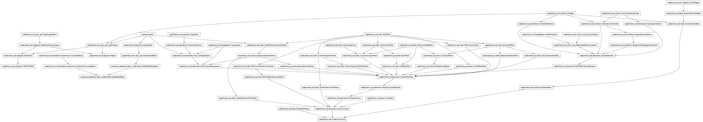
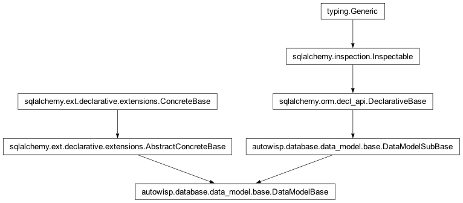
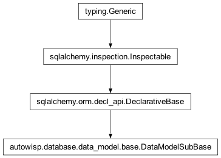

autowisp.database.data_model.base module
Class Inheritance Diagram

Declare the base class for all table classes.
- class autowisp.database.data_model.base.DataModelBase(**kwargs: Any)[source]
Bases:
AbstractConcreteBase,DataModelSubBase
The base class for all table classes.
- id = Column('id', Integer(), table=None, primary_key=True, nullable=False)
- timestamp = Column('timestamp', TIMESTAMP(), table=None, nullable=False, server_default=DefaultClause(<sqlalchemy.sql.elements.TextClause object>, for_update=False))
- class autowisp.database.data_model.base.DataModelSubBase(**kwargs: Any)[source]
Bases:
DeclarativeBase
The base class for all table classes, except without ‘id’ column.
- metadata: ClassVar[MetaData] = MetaData()
Refers to the
_schema.MetaDatacollection that will be used for new_schema.Tableobjects.See also
orm_declarative_metadata
- registry: ClassVar[_RegistryType] = <sqlalchemy.orm.decl_api.registry object>
Refers to the
_orm.registryin use where new_orm.Mapperobjects will be associated.
- timestamp = Column(None, TIMESTAMP(), table=None, nullable=False, server_default=DefaultClause(<sqlalchemy.sql.elements.TextClause object>, for_update=False))